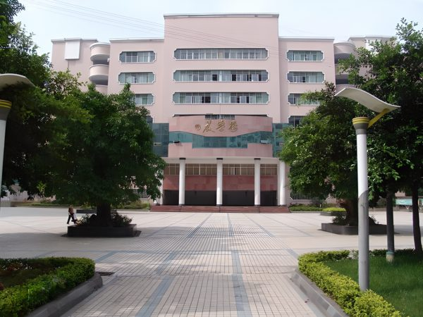

达州市高级中学（简称“达高中”）是一所底蕴深厚的百年名校，前身可追溯至1741年的汉章书院，1903年改制为川东北首所新式学校“绥定府预备中学堂”。学校现为四川省一级示范性普通高中，形成了“一校三区”的办学格局，校训为“自信自强，厚德厚才”。
1．柴市街校区（本部）

校区定位与历史地位
柴市街校区是达高中的发源地和行政本部，位于通川区柴市街154号。这里承载着学校自1741年汉章书院以来的全部文脉，建国前曾是川东北地区唯一的最高学府，建国后长期作为地市级重点中学，素有“巴渠清华”的美誉。校区与凤翎校区合计占地105余亩，校舍建筑面积达51142平方米。
办学规模与师资
柴市街校区设有90个教学班，在校学生5400余人。校区教职工286人，其中正高级教师2人、副高级教师75人，拥有一支以中高级教师为主体的成熟师资队伍。学校近年围绕“师德溢美、师风尚美、师能显美”的教师文化，推行专家引领、名校跟岗、红烛赛课等“八位一体”的教师专业发展机制，全国、省、市优秀教师及骨干教师达107人。
校园环境与设施
校园绿树成荫，各色鲜花次第开放，身着蓝白校服的学生奔跑在红绿相依的塑胶操场上，构成一幅别具一格的校园画卷。2018至2021年间，政府先后投入超过1100万元对学生公寓、学生食堂、运动场及教师办公室进行改造升级，办学条件得到显著改善。作为老校区，柴市街校区承载着最深厚的历史记忆，教学楼与古树相映，人文气息浓厚。
教学与管理特色
柴市街校区是学校“教学强基”战略的核心践行区，重点落实“集体备课、高效课堂、有效训练、科学测试、深度分析、精准补差、增量考核”七个维度的教学常规管理。学校“突出特色、多元发展”，开设了剪烛文学社、柔道社、女红手工社、Python编程社等30多个社团课程，并建设了艺术涵养、文学鉴赏、红色传承、科技创新等十大特色校本课程，践行五育并举、知行合一的育人理念。
2．凤翎校区
丸辣我没找到这个校区的照片qwq
校区定位与历史沿革
凤翎校区位于通川区北翎路100号，是达高中的初中部所在地，与柴市街本部共同构成学校的老校区板块。校区同样创建于1903年，与本部一脉相承，历史上长期作为达高中的初中办学基地。凤翎校区与本部共同享有“巴渠清华”的社会声誉，是达州基础教育的重要象征。
校园环境
凤翎校区与本部校园环境一脉相承，绿树环绕，鲜花点缀其间，塑胶操场与蓝白校服的学生构成生机盎然的日常图景。校区注重“彩色校园”建设，以筑艺趣园为载体，营造育文化人的环境氛围。
设施升级与改造
2022年，政府计划再投资1500万元对凤翎校区进行升级改造，涵盖校舍修缮、设施更新等方面，旨在为初中阶段的学生创设更加优质的育人环境。此外，学校总部及凤翎关校区的运动场改造项目也已启动，主要改建操场8000平方米、风雨篮球场800平方米及舞台膜结构400平方米，进一步提升体育教学和活动场地条件。
办学特色
凤翎校区作为初中部，在达高中“以人为本、多元育人、和谐发展”的办学理念框架下，着力培养基础扎实、素质全面、有持续发展能力的优秀初中毕业生。校区与本部共享师资和教研资源，教学管理标准与本部保持一致，同时针对初中阶段学生的成长特点，注重行为习惯养成和综合素质奠基。
3．江湾城校区
校区定位与建设背景
江湾城校区是达高中最新、规模最大的校区，位于通川区凤北街道青杠垭路123号，由通川区政府投资8亿元建设，于2020年9月正式投入使用，是一所全封闭寄宿制公立完全中学。校区占地300亩，现有在校生5000余名，是学校迈向现代化、智慧化教育的重要基地。
硬件设施
江湾城校区的设施在达州乃至川东地区均属一流。校区建有体育馆、图书馆、艺术楼等大型场馆，配置智慧教室155间及创客实验室等数字化教学空间。校园内设有游泳馆、演艺中心、篮球馆等专业场馆，以及约30亩的巨大水景庭院，依山而建，尊重自然地形，形成了兼具功能性与审美感的校园空间。教室配备高端智能电子白板、护眼节能灯和典雅课桌椅，每一间教室都体现出“实用性与美观性并存”的设计理念。
智慧教育特色
江湾城校区是达高中智慧教育的核心阵地。校区大力推行“互联网+教育”行动，强化数字资源运用，以教育信息化推进教育现代化，于2024年入选首批省级智慧教育示范学校，是达州市唯一入选的学校。校区的智慧教室支持远程互动、线上线下同步授课、数字板书、投屏研讨及课程录制等多项功能，构建了覆盖教学全流程的数字化环境。2024年，学校入选全国智慧教育优秀案例，江湾城校区教师也在省级课堂教学展评中荣获四川省一等奖。
师资力量
江湾城校区现有教职工347人，其中正高级教师2人、高级教师80人、一级教师94人，拥有研究生学历的教师113人，本科学历教师占比100%。校区教师团队在省、市级教学竞赛中屡获佳绩，拥有省级一等奖教学案例，2024年师生获部级至区级奖项达272人次。
办学模式与日常管理
江湾城校区实行全封闭寄宿制管理，学费按公办标准收取。校区日常开展军训、学科竞赛、高考励志演讲等活动，注重拔尖人才培养和学生的全面发展。作为完全中学，江湾城校区涵盖初中和高中两个学段，以“尊重自然、依山而建”的规划理念，为学生提供了学习、生活、运动一体化的完整校园环境。